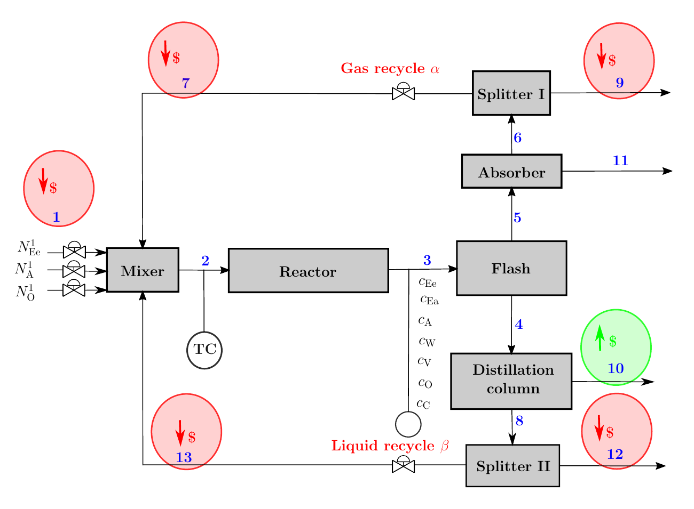

Figure 1. (A) Historical plant datasets are used to train (B) a structured model and a black-box ML/AI closure model, each deployed in real-time optimization (RTO). (C) Near-identical fits map to very different optima, the worst-case structured model loses close to 30% profit and the black-box model over 50%. A reliable data-driven model must recover the optimum, not be judged solely on the validation dataset.

Figure 2. Simplified process flowsheet for the vinyl acetate (VAc) monomer plant consisting of 7 units and 13 streams. (Ee: Ethylene, Ea: Ethane, A: Acetic acid, O: Oxygen, W: Water, V: Vinyl acetate, C: Carbon dioxide). Outlet concentrations from the reactor are measured subject to step inputs in the decision variables (fresh feed rates, recycle fractions and reactor temperature), that are shown by the control valves and the controller icon.
Figure 3. A snapshot of training data from the plant model with no measurement noise. The measurements are shown in red and the decision variables in black. The dotted grey lines represent \(x_s^\star\) and \(u_s^\star\) from. [source: VAc_plot_train_val_param_nn.py]
Figure 4. Concentration predictions on the validation set for (a) rmeas, (b) cmeas_rinit, (c) cmeas and (d) cmeas_noise. Measurements are shown in red. The shaded bands are the ensemble spread, taken as the 5--95% quantiles of the 20 random initializations. [source: VAc_plot_train_val_param_nn.py]
Figure 5. Parity plots of the reaction rates \([r_1, r_2]^\Rm{T}\) on the validation set for (a) rmeas, (b) cmeas_rinit, (c) cmeas and (d) cmeas_noise. Top row shows \(r_1\) and bottom row \(r_2\). The dotted line is ideal parity. The bands are the ensemble spread, taken as the 5--95% quantiles across the 20 random initializations. [source: VAc_plot_train_val_param_nn.py]
Figure 6. Concentration predictions on the validation set for the black-box model, (a) bbox and (b) bbox_noise. Measurements are shown in red. The bands are the ensemble spread, taken as the 5--95% quantiles of the 20 random initializations. [source: VAc_plot_train_val_param_bbox_nn.py]
Figure 7. Plant profit landscape \(\ell(T, \alpha)\) with the remaining degrees of freedom fixed at the plant optimum. The star marks the plant optimum \((T^\star, \alpha^\star)\). The surface is unimodal and well-conditioned. [source: VAc_plot_hist.py]
Figure 8. Model-predicted profit landscape \(\hat{\ell}(T, \alpha)\) that each trained model presents to the RTO optimizer. Panels, in order of degrading structure and data, are (a) rmeas, (b) cmeas_rinit, (c) cmeas, (d) cmeas_noise, (e) bbox, and (f) bbox_noise. The star marks the plant optimum as a fixed reference and the circles each model's own optimum. Each panel shows one of the worst-performing members of the 20 initializations. [source: VAc_plot_hist.py]
Figure 9. Profit loss \(\Delta \ell\) for (a) rmeas, (b) cmeas_rinit, (c) cmeas and (d) cmeas_noise. Columns are cases and rows are the 3 multi-start RTO seeds; each panel is the distribution over the 20 ensemble members, plotted as relative frequency. The dotted line marks the best achievable profit loss, \(0\%\). [source: VAc_plot_perturb_plant.py]
Figure 10. Profit loss \(\Delta \ell\) for (a) bbox and (b) bbox_noise. Columns are cases and rows are the 3 multi-start RTO seeds; each panel is the distribution over the 20 ensemble members, plotted as relative frequency. The dotted line marks the best achievable profit loss, \(0\%\). [source: VAc_plot_perturb_bbox_plant.py]
Figure S1.cmeas_rinit: drift away from the initialization. The model is initialized at the weights at which it recovers the plant optimum, marked by the dash-dotted line (learning rate \(0\), no training step taken). Under ADAM (left) the loss moves away from that line as training proceeds, so the optimizer leaves the basin it was handed. After the switch to L-BFGS at epoch 250 (right) the loss returns toward the initialization, so L-BFGS recovers part of what ADAM gave up. As the learning rate decreases, ADAM takes smaller steps and the curves stay at the initialization; this preserves the optimum only because it was supplied, not because training located it. [source: VAc_plot_lr.py]